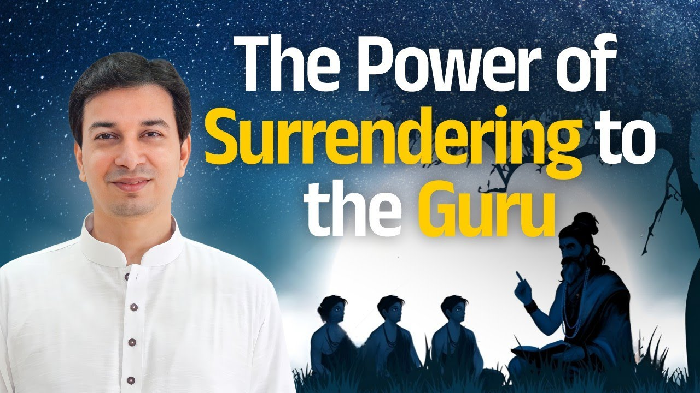

गीता का एक श्लोक है जो पहली बार सुनने पर चौंका देता है। श्रीकृष्ण अर्जुन से कहते हैं, सब धर्म छोड़कर मेरी शरण में आ जा।
सब अधर्म नहीं, सब धर्म। आचार्य जी इस श्लोक को खोलकर दिखाते हैं कि इसमें शरणागति का पूरा रहस्य छिपा है।
एक श्लोक जो चौंकाता है
सर्वधर्मान्परित्यज्य मामेकं शरणं व्रज।
अहं त्वा सर्वपापेभ्यो मोक्षयिष्यामि मा शुचः॥
"सब धर्मों को छोड़कर केवल मेरी शरण में आ जा। मैं तुझे सब पापों से मुक्त कर दूँगा, शोक मत कर।"
(श्रीमद्भगवद्गीता १८.६६)
"त्यज" का अर्थ है छोड़ देना। "परि" जुड़ते ही इसका अर्थ हो जाता है पूरी तरह, तुरंत छोड़ देना। जैसे आत्मा से परमात्मा, वैसे त्यज्य से परित्यज्य।
और क्या छोड़ना है? "सर्व धर्म", सब धर्म। यहाँ "सर्व अधर्म" नहीं कहा गया। यही बात इसे आश्चर्यजनक बनाती है।
शरण किसकी: जीवित गुरु की
"मामेकं शरणं व्रज", मेरी शरण में आ जा। आचार्य जी समझाते हैं कि यह शरण गुरु की है। अर्जुन के लिए कृष्ण थे, आपके लिए कृष्ण कोई दूसरा होगा, और वह अभी का, जीवित होगा।
भविष्य के गुरु से आपको कोई लाभ नहीं, न समाधि ले चुके गुरु से। लाभ जीवित गुरु से है। समाधिस्थ गुरु भी आपको किसी जीवित गुरु के पास ही भेजते हैं। सच्ची साधना और भक्ति आपको वहीं पहुँचा देती है।
"मा शुचः": अब रोना नहीं
श्लोक का वचन है: "मैं तुझे सब पापों से मुक्त कर दूँगा, तू शोक मत कर।"
आचार्य जी इसे जीवन से जोड़ते हैं। किसी पाप के कारण रोग आया, किसी पाप से दरिद्रता आई, किसी पाप से झगड़े हुए और रिश्ते बिगड़े। जब पाप ही चले गए, तो यह सब भी ठीक होगा, शर्त एक है: जैसा कहा जाए वैसा करना।
धर्म का अर्थ मज़हब नहीं, कर्तव्य है
तो सब धर्म छोड़ने का अर्थ क्या है? क्या हिंदू, मुस्लिम, ईसाई, जैन होना छोड़ना है? नहीं। क्या सत्य बोलना छोड़ना है? बिल्कुल नहीं।
धर्म का अर्थ है कर्म। क्रिया नहीं, कर्तव्य कर्म।
पुत्र का पुत्र धर्म है, पिता का पिता धर्म, पति का पति धर्म, पत्नी का पतिव्रता धर्म, पड़ोसी का पड़ोसी धर्म। हर भूमिका के साथ कुछ करणीय और अकरणीय बातें जुड़ी हैं, यही धर्म है।
आज आप कितनी भूमिकाएँ निभा रहे हैं, और हर एक में क्या सही है, यह आपने किससे सीखा?
अपनी धारणा छोड़ो, सही गाड़ी पकड़ो
श्लोक का संदेश है: अपनी सारी धारणाएँ छोड़कर गुरु के पास आओ। उनसे पूछो कि मेरे लिए क्या करना सही है और क्या नहीं।
आचार्य जी का उदाहरण बहुत सरल है। दिल्ली जाना है, तो कम से कम यह तो देख लो कि गाड़ी चेन्नई की है, हैदराबाद की, मुंबई की या दिल्ली की। एक बार सही गाड़ी पकड़ ली, कर्म की दिशा सही पकड़ ली, तो गंतव्य स्थान अपने आप आएगा।
कर्मण्येवाधिकारस्ते मा फलेषु कदाचन।
"तुम्हारा अधिकार केवल कर्म पर है, उसके फल पर कभी नहीं।"
(श्रीमद्भगवद्गीता २.४७)
फिर कर्म पर अधिकार है, फल पर नहीं। संकल्प करके मार्ग सही करना है, और मार्ग गुरु दिखाते हैं।
चमत्कार को नहीं, ठीक से नमस्कार करो
सत्र में लोगों ने अचानक उपचार होते देखा। आचार्य जी कहते हैं, यह चमत्कार नहीं है। कोई पुराना पाप कर्म रोग का कारण था, और वह एक झटके में ठीक हो सकता है। वे कहते हैं कि चमत्कार को नमस्कार मत करो, बल्कि नमस्कार ठीक से करो, तो आपके जीवन में चमत्कार हो जाएगा।
ठीक से नमस्कार का अर्थ है "न मम": मैं नहीं, तू; मेरा नहीं, तेरा। यह भाव जितना दृढ़ होगा, अहंकार उतना जाएगा। और अहंकार जाते ही जीवन में चमत्कार रातों-रात होते हैं।
क्या आपका नमस्कार केवल हाथ जोड़ना है, या उसमें "मेरा नहीं, तेरा" का भाव भी है?
गुरु यही सिखाते हैं, और ऐसे गुरु तक पहुँचना ही असली शरणागति है।
मुख्य बातें
- गीता १८.६६ में "सर्व अधर्म" नहीं, "सर्व धर्म" छोड़ने को कहा गया है।
- शरण गुरु की है, और लाभ जीवित गुरु से है।
- पाप जाते हैं तो रोग, दरिद्रता और बिगड़े रिश्ते भी ठीक होते हैं।
- धर्म का अर्थ मज़हब नहीं, हर भूमिका का कर्तव्य कर्म है।
- अपनी धारणा छोड़कर गुरु से दिशा लो; सही गाड़ी पकड़ी तो मंज़िल अपने आप आती है।
- चमत्कार को नहीं, ठीक से नमस्कार करो: "न मम", मेरा नहीं, तेरा।
